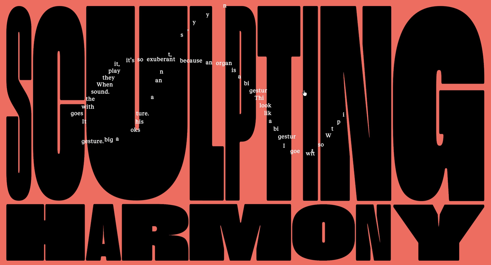

What was the first thing you paid attention to when interacting with the experience?
The first thing that I took notice of were the different forms of media used together in the first segment of the website, such as the flat coloured background transitioning into video through the movement of the user’s cursor. Different movements and interactions from the user’s mouse (such as clicking, hovering, dragging etc) created movement/fluidity in the elements of the website.

Spend two minutes with the experience and create a list of each of your discrete actions.
- Attention is immediately turned to the bold, moving text on the starting page (moves without user intervention - inviting user to scroll over the text - doing this reveals a quote from the designer which follows your cursor as you move
- This then leads the user to click where the quote is following, causing the bold text to change in size and colour
- User can then scroll forwards into the first segment of the ‘story’, as a their scrolling controls the pace of an interactive video - allowing them to move fast/slow backwards/forwards etc through their control
- User can then navigate towards the video segments of the chapters, which they can choose to skip or guide towards specific parts of the video